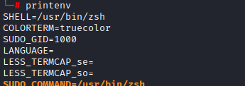
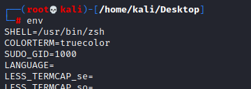
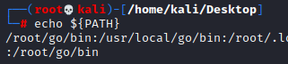

Linux Environment Variables
Payloads:
https://github.com/swisskyrepo/PayloadsAllTheThings/tree/master/Command%20Injection#bypass-characters-filterTo list all the Linux Environment variables we can use
printenv So we can look which ones may contain useful characters, and then try to reduce the string to that character only.
 • To print a single environment variable
• To
specify the start position and the end position echo ${VARIABLE:START:END}